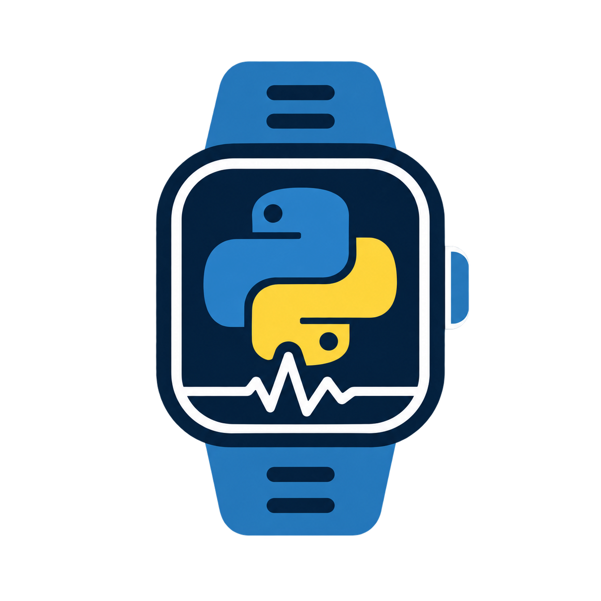

pywearable


pywearable turns wearable exports into analysis-ready trajectories for
activity, sleep, heart rate, heart-rate variability, respiration, oxygen
saturation, provider scores, and adherence.
A typical workflow has three steps: choose a loader, extract one or more features at the resolution needed by the analysis, and inspect or visualize the resulting trajectory. The user guide introduces each step with runnable examples; the API reference lists every supported parameter.